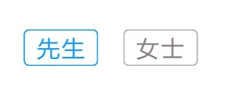

快应用的实践
面向的场景？
目前快应用在饿了么中的用户场景为：
用户在【应用商店】【浏览器】【自带搜索助手】搜索饿了么，出现快应用的条目，用户点击饿了么快应用，无需安装，直接打开快应用。同时会提示用户是否生成桌面图标，并且用户可以收到来自服务进行的推送，体验和原生APP 相差无异。
开发工具与条件
开发快应用的前提是拥有一台九大厂商品牌之一的安卓手机，然后注册快应用联盟账号，接着与该手机对应品牌的开发者账号进行绑定，然后照着快应用的开发文档进行开发，最后上传至快应用官网进行测试审核并分发。目前快应用还不能实现自动统一分发到各个平台去审核。如果想要在每个品牌的应用市场都上架自己的快应用，就需要每个平台的开发者账号都要去填写开发者信息，1-2工作日审核，然后再上架自己的快应用。
与前端的对比
页面布局
快应用整体基于flex 布局：
display 默认 flex，支持的参数为 flex | none
position 默认 none，支持的参数为 fixed | none
宽 高 长度值只能使用px 或 %
页面标签
如果要将原生 HTML 布局迁移至快应用，需要注意的是快应用中没有 h1~h6 标签，同时一些 HTML5 标签例如<header> <footer> <article> 等都要做改动。
另外文本不能单纯放在<div> 中，只能放在 <a> <span> <text> 标签中。
使用时要注意好嵌套关系，比如 <a> 标签的子组件只支持 <span> 标签，<text> 标签的子组件只支持 <a> <span>。
<img> 图片标签在快应用中用 <image> 标签替代。
<rating> 是原生html 没有的，是用来显示星级的组件，显示星级在饿了么App 中处处可见，这个功能非常实用，省去了我们手写去实现的时间。
Storage
快应用中打包后是一个 .rpk 程序，因此并不需要 sessionStorage，在快应用中，若想要做本地存储，可以直接使用 Storage 方法：
例如读取存储的用户信息
storage.js
import storage from '@system.storage'
const User = () => {
return new Promise((resolve, reject) => {
storage.get({
key: 'USER',
success: (currentUser) => {
currentUser = currentUser && JSON.parse(currentUser)
if (!currentUser) {
currentUser = undefined
}
resolve(currentUser)
},
fail: (err) => {
reject(err)
}
})
})
}
export default {
User
}
Home.ux：
import { User } from '../Common/service/storage'
User().then((currentUser) => {
this.currentUser = currentUser;
this.loadData()
})
通过storage.get，storage.set，storage.clear，storage.delete可以随心所欲的操作存储我们的数据了。
与Vue.js 的对比
使用过 Vue.js 的同学再来开发快应用会发现快应用的的API 大量的借鉴了 Vue.js，甚至一些方法名也是一样的。二者一个是类 App 应用框架，一个是 Web 应用框架，因此还是各有各的特点，下面简单总结介绍一下二者的异同。
开发环境及工具
快应用的开发环境对 NodeJS 的版本要求很严格，官方推荐安装 v6.11.3， 如果开发者本地的 NodeJS 版本过高，快应用的 Toolkit 工具安装时会报错，官方给的解释是：内部 ZipStream 实现与 node-archive 包不兼容。安装完 Toolkit 之后，也可以像 Vue.js 一样通过脚手架工具快速生成一个项目模板：
hap init <ProjectName>
除此之外，快应用还需要在手机上安装调试器和平台预览版，用来在开发过程中实时预览界面和开发调试平台新功能，最后可以按照官方的文档跑起这个文档项目。本地开发快应用推荐使用 VSCode，因为可以在 VScode 里下载官方推荐的 Hap Extension 插件。
而对于 Vue.js 而言，所有支持 Language Server Protocol 的编辑器都适合 Vue.js。因此主流的前端编辑器都支持 Vue.js 语法开发。
相对比而言，Vue.js 的对开发环境和开发工具的限制更小一些。但是一个是新起的快应用，另一个是有四年时间积累的 Vue.js ，自然不能这么去对比，快应用的开发条件的完善目前只是时间问题。
模板
模板定义
快应用和 Vue.js 都是使用<template> 标签来定义模板，小程序也是如此。但是 Vue.js 中的模板的定义类型会更多一些。
自定义组件在模板中的引用
快应用中在模板中直接通过import 进行引入，例如：
<import name='comp' src='./comp'></import>
<template>
<div>
<comp prop1='xxxx' onevent1="bindParentVmMethod1" @event-type1="bindParentVmMethod1"></comp>
</div>
</template>
它也可以通过(on|@)语法绑定自定义子组件上的事件，Vue.js 是将自定义组件注册到 components 中再去引用。
生命周期
快应用的常用的生命周期如下：
| 生命周期 | 描述 |
|---|---|
| onInit | 可以开始使用页面中的数据 |
| onReady | 开始获取DOM节点（如：this.$element(idxxx) |
| onShow | 页面被切换重新显示时会被调用onShow |
| onHide | 页面被切换隐藏时调用onHide |
| onDestroy | 页面被销毁时调用 |
通过描述，我们可以用实践总结出一些这些生命周期实际的使用场景：
onInit
获取或修改localstorage中存储的内容；
获取全局对象及方法 例如：this.$app.$data.place.address；
获取请求接口返回的数据；
onReady
组件自定义事件的触发 例如：this.$dispatch('shopMenuReady')
onShow
页面后退时触发，数据需重置，例如用户进入饿了么首页 => 点击左上角进行修改地址 => 进入地址页面 => 选择地址 => 自动返回到首页 => onShow() 事件监听 => 更新左上角的地址
onHide
场景与 onShow 相反
onDestroy
该页面某个行为使用了 setInterval()方法，离开该页面时在onDestroy() 中clearInterval 保证下次进入时仍是初始化的状态。
在Vue 中生命周期除了上面的onShow 和onHide 其他差别不大，对于Vue.js 中 onShow 可以用 watch 去监听路由变化来上述onShow中的场景，例如：
watch: {
// 如果路由有变化，会再次执行该方法
$route: 'initPageData'
},
methods: {
initPageData () {
// do something
}
}
数据绑定：
内容绑定，两者采用的都是 Mustache 语法（双大括号），两者都可以在内容中插入html。
Vue :
<div>{{ title }}</div>
<div v-html="message">
quickapp:
<text>{{ title }}</text>
<richtext>{{ message }}</text>
但是需要注意的是在快应用中文本只能在 <text></text> 标签中，直接放在 div 中不会显示。
条件与列表渲染：
快应用：
条件渲染有 if/elif/else 这3个相关指令，用于控制是否增加或者删除组件
<text if="{{conditionVar === 1}}">if: if条件</text>
<text elif="{{conditionVar === 2}}">elif: elif条件</text>
<text else>else: 其余</text>
同时还有 show 指令，用于控制组件的显示状态，并不会从 DOM 结构中删除：
<text show="{{showVar}}">show: 渲染但控制是否显示</text>
列表渲染：
<div class="city" for="city in cities">
<text>城市：{{city.name}}</text>
</div>
Vue.js 的条件渲染：
<div v-if="type === 'A'">
A
</div>
<div v-else-if="type === 'B'">
B
</div>
<div v-else-if="type === 'C'">
C
</div>
<div v-else>
Not A/B/C
</div>
<h1 v-show="ok">Hello!</h1>
列表渲染：
<li v-for="todo in todos">
{{ todo }}
</li>
两者从使用逻辑上来说几乎没有什么区别，只是写法略有不同，但是快应用中增加了一个组件block，可以使用<block>实现更为灵活的"列表/条件渲染"。
block 是一个仅表达逻辑的组件，并不会在页面渲染中生成 DOM 节点，这个可以说是很得人心。Vue.js 里面也有一些内置的不会产生DOM 节点的组件，例如 component，keep-alive，transition ，transition-group，<slot>。简单举个例子：
使用 Vue 保留的 <component> 元素，将多个组件动态地绑定到 <component> 元素的 is 属性上
<template>
<component :is="isSignedIn ? 'home' : 'welcome'"></component>
</template>
<script>
import Vue from 'vue'
import Home from './home.vue'
import Welcome from './welcome.vue'
export default Vue.extend({
components: {
Home,
Welcome
}
})
</script>
在Vue.js 中只有上述几个内置组件，使用时组件自身不产生 DOM 节点，在除了这几种内置组件之外的需求我们只能在循环块的外面加一个div 去用v-if来判断循环块的显示隐藏，但是有时候父div可能会对内部块的样式带来不好的影响，我们还要在此div 加上一些样式来消除该影响，同时也让 DOM 数层级会变得沉重冗余。但是有了block组件就很开心了，需要隐藏这个块，直接在外围加block就好了，渲染出来的DOM清爽干净。
属性的获取
快应用中也有 event，可以通过点击事件来传入相应的函数，通过打印log，可以看一下具体包含什么：
<input id="test-link" class="link" data-detail="点击这里" @click="handleClick" type="button">去点餐</button>
打印出来的信息：
{
"type": "click",
"target": {
"ref": "5",
"type": "input",
"attr": {
"type": "button",
"dataDetail": "点击这里",
"id": "test-link"
},
"style": { },
"event": [
"click"
]
},
"timestamp": 1522837358823
}
通过 event 我们可以发现 target.attr.id 就是该元素的 id，在 event 中我们还可以看到 定义的data-detail 在 target.attr中出现了。可见快应用中也可以自定义元素属性参数值。这样子就可以利用这个target.attr 做一些事情了，比如我们想获取这个按钮上的文本，可以在input 标签上加入 data-name="去点餐" 那么就可以将其绑定到attr 中，我们可以通过 event.target.attr.dataName 去获得这个按钮的名字。但是这并不是被快应用中所推荐，这样使用，控制台会有warning 的提醒：
ERROR: 组件 `input` 不支持属性 `data-detail`，
支持的属性有 [type, checked, name, value, placeholder, id, style, class, disabled, if, elif, else, for, tid, show]
Vue.js 支持通过 ref 属性来访问其它组件和 HTML 元素。并通过 this.$refs 可以得到组件或 HTML 元素的上下文。在大多数情况下，通过 this.$refs来访问其它组件的上下文同样也是不被 Vue.js 所推荐。
事件绑定
快应用中支持的事件有：
| 名称 | 参数 | 描述 |
|---|---|---|
| click | - | 组件被点击时触发 |
| longpress | - | 组件被长按时触发 |
| blur | - | 组件获得焦点时触发 |
| appear | - | 组件出现时触发 |
| disappear | - | 组件消失时触发 |
| swipe 正式版本可用 | 组件上快速滑动后触发 |
使用的时候使用 on 或者简写@ 绑定事件，例如
<a @click="handleClick">开始</a>
这种方式与 Vue.js 也很相似，不过 Vue.js 额外提供了事件修饰符，可以阻止一些事件的传播等，例如：
<!-- 阻止单击事件继续传播 -->
<a @click.stop="handleClick">开始</a>
事件监听
快应用的事件监听与 Vue.js 相似，都是 使用 $on()、$off $emit()去监听，移除，触发事件，但是还是有一些区别。
监听原生组件事件
监听快应用的原生组件事件就用到了我们上面所说的提过的event 的 target 来获取当前组件的信息，
例如用户选择取餐人的性别功能：

<block for="{{ sex }}">
<input
type="button"
checked="{{ address.sex === $item.label ? true : false }}"
class="tag {{ address.sex === $item.label ? 'tag-active' : '' }}"
@click="setGender($item.label)"
value="{{ $item.name }}">
</input>
</block>
data () {
return {
address: {
sex: 1
},
sex: [
{ label: 1, name: '先生' },
{ label: 2, name: '女士' }
]
}
},
setGender(label, e) {
// 事件参数，target
let isChecked = e.target.attr.checked
Object.assign(this.address, {
sex: !isChecked ? label : ''
})
isChecked = !isChecked
}
触发原生组件事件
快应用可以通过 $emitElement 动态触发事件，但是以饿了么快应用为例，没有想到特别适合使用它的场景，因此在实际在业务中没有被用到，对此有兴趣的同学可以查看快应用的具体文档，这里就不一一阐述了。
组件中的通信
和 Vue.js 类似，快应用也通过 props 进行组件之间的数据传递
<script>
// 子组件
export default {
props: [
'restaurants'
],
data: {},
onInit () {
console.log('props', restaurants)
}
}
</script>
页面路由定义及页面间的切换
快应用的页面路由放在manifest.json 中，通过设置 entry 和 page 来实现：
"router": {
"entry": "Home",
"pages": {
"Home": {
"component": "index"
},
"Detail": {
"component": "index"
},
"About": {
"component": "index"
}
}
}
pages 的key对应页面目录，value 对应页面详细的page
在页面间的切换中 也可以像 Vue.js 一样 使用router.push 和router.replace控制页面之间的跳转，同时router 的接口参数params 可配置页面跳转需要传递的参数 。
import router from '@system.router'
router.push({
uri: 'Detail',
params: {
id
}
})
或者
history.push({
uri: 'Detail',
params: {
id: id.toString()
}
})
需要注意的一点是，在mainifest.json添加完router 之后，配置可能不会马上生效，如果找不到router，快应用不会报错，只会跳过检查，然后进入一个未知的空白页面。如果发生这种情况，只需要重新 npm run build => server => watch 一下 就可以了。
数据请求方面：
快应用对外发布的最新版本已经支持了 async/await 是一件很让人开心的事情，目前饿了么快应用的数据请求依然用的是 fetch 。在新的项目里面，我们尝试使用了async / await ，根据官方给的示例，使用感比较顺畅，如果是 Vue.js 的项目使用的是axios HTTP 库，迁移至快应用，在网络请求方面花费的时间成本很低，下面我们来演示对比一下：
Vue 项目：
request.js
import axios from 'axios
import { BASE_HOST } from './constants'
const fetch = axios.create({
baseUrl: `${BASE_HOST}`,
withCredentials: true
})
export { fetch as default }
api.js
import fetch from './axios'
export const getProductDetail = ({ fpId }) => {
return axios({
url: `/demo/getProductDetail/${fpId}`,
method: 'get'
})
}
Detail.vue
async fetchDetail () {
const { fpId } = this
const detail = await getProductDetail({ fpId })
console.log('detail', detail)
}
下面是快应用中接入 async/ await 的官方推荐的使用姿势，在此基础上做了一些状态的判断和处理：
request.js
import nativeFetch from '@system.fetch'
import prompt from '@system.prompt'
const natives = {
async fetch(options) {
const p1 = new Promise((resolve, reject) => {
options.success = function(res) {
if (res.data && res.code === 200) {
const data = res.data
try {
resolve(JSON.parse(data))
} catch (err) {
resolve(data)
}
} else {
try {
const { message, name } = JSON.parse(res.data)
if (name !== 'JSON_BODY_ERROR' && message) {
prompt.showToast({
message,
duration: 1
})
}
reject(res)
} catch (error) {
reject(res)
}
}
}
options.fail = function(res, code) {
resolve({ res, code })
}
nativeFetch.fetch(options)
})
return p1
}
}
// 注入到全局
const hookTo = global.__proto__ || global
hookTo.natives = natives
export default natives
我们在调用时完善一下：
api.js
import natives from './request'
import { BASE_HOST } from './constants'
export const getProductDetail = ({ fpId }) => {
return natives.fetch({
url: `${BASE_HOST}/demo/getProductDetail/${fpId}`,
method: 'get'
})
}
Detail.ux
async fetchDetail () {
const { fpId } = this
const detail = await getProductDetail({ fpId })
console.log('detail', JSON.stringify(detail))
}
这样子就可以愉快的使用async / await 去处理网络请求了。这里需要注意的也有一点：接口返回的数据要进行JSON.parse。而返回的数据如果想要在控制台打印出来，必须要JSON.stringify，因为 Chrome 浏览器的 devtools 目前不支持 Object 的展开。
哪些是Vue.js 没有，而快应用有的
原生性
快应用是基于手机硬件平台的新形态，可以直接使用原生 App 的很多功能，例如扫描二维码、传感器、地理位、设备信息、系统音量、应用管理等等，开发者不需要借助外部插件，可以轻松实现这些功能，而这些原生功能的使用也是让快应用的使用感无限接近传统App。
封装组件
快应用是基于移动端的开发平台，因此对于移动端的标准化显示做了很好的封装，<list> 组件， <tab> 组件的加入，可以使开发者快速的在页面实现长列表或者屏幕滚动等效果。并且在 <list> 组件中还可以直接使用onscrollbottom ，scrolltop 事件等来监听列表滚动，接入方便快捷，不用再去经历重复造轮子的过程。
第三方服务的支持
快应用支持 微信支付、支付宝支付、第三方分享等功能，无需用户再去查找 支付宝，微信等 web 接入的API 文档，这些繁琐浪费时间的接入，快应用都替你封装的很完善了。
哪些是 Vue.js 有，而快应用没有的
应用组件的状态管理
做大型的项目的时候，我们在 Vue.js 中我们会习惯用Vuex 来存储管理应用的所有组件的状态，但是在快应用中 并没有store 这个概念，数据传递都只能依赖props或者赋值在$app对象上成为一个全局变量，例如：
// 获取经纬度
const latitude = this.$app.$data.place.latitude
const longitude = this.$app.$data.place.longitude
目前存在的痛点
- 快应用缺少集成的 IDE 和 模拟器，饿了么接入快应用的初期只能使用 log 在控制台打印日志去排查问题，现在有了 Chrome 浏览器中的 devtools 工具进行调试，可以解决一部分调试的问题，但是在排查页面的样式问题时不能通过该工具进行审查元素，只能手动一个一个标签的去展开。同时开发时不支持断点调试。
- 不同厂商之间的规则不统一，各家的审核规则有差异，饿了么快应用若要在每个厂商都上线，时间线会很长。
- 开发时做的修改操作，
npm run watch监听到之后，只能热重载，并不能热更新。每次调试非首页的页面，更新一下，都需要重新走一遍操作流程。 - .rpk 文件最大只能为 1M，大型应用必须要考虑将图片和较大的 JS 、CSS 资源丢到 CDN 上去。
- 开发工具的模板插件目前只支持 VSCode
- 开发文档还不够完善，很多 API 缺少更详细的示例。
总结
说了这些，可能有的人会问： 是不是学习开发快应用就得先学 Vue，其实不然，Vue 的简单上手的优点同样适用于快应用。因为快应用才刚起步，网络上除了官方文档之外的文献，教程还比较少，对于开发者来说如果开发时困难可能要一步步摸索排查，比较每一门新技术都是需要耐心的学习和认真对待，随着快应用开发者的越多涌入，九大厂商的全力支持，相信快应用生态圈更加完善，美好！